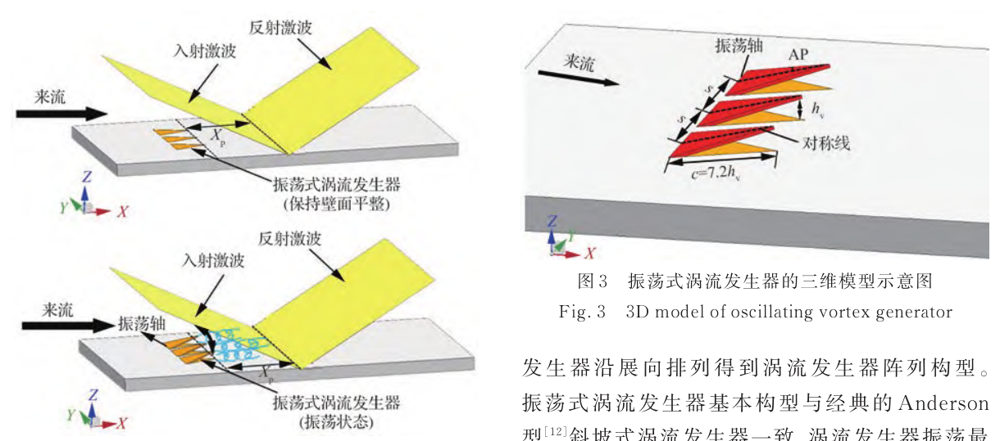
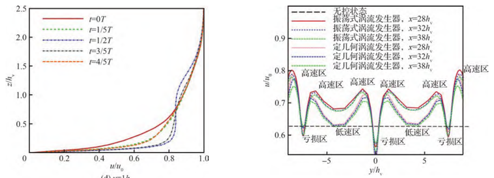
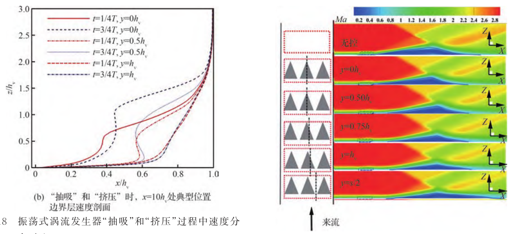
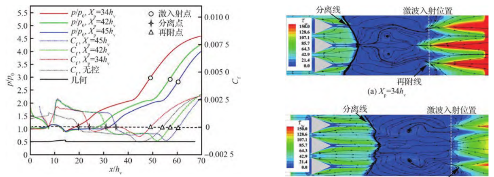

01中文摘要
针对高超声速进气道中激波/边界层干扰诱导显著分离导致气动性能下降的问题，提出基于新型振荡式涡流发生器阵列的控制方法。采用动网格非定常数值模拟研究该阵列流场，验证控制有效性并分析参数影响。振荡式涡流发生器在超声速边界层内诱导强度可变的涡系，增强边界层与高速主流掺混，其挤压、抽吸效应持续为气流充能，使速度剖面更饱满。随振荡频率增加，控制效果增强，形状因子最高降低28%；激波入射在涡流发生器下游34h_v处时效果最佳，分离区长度较无控制减少25%；监控面总压恢复系数提高5%、马赫数提高2.4%。
原始摘要（英文/原文）
激波/边界层干扰（Shock Wave/Boundary Layer Interaction, SWBLI）是高超声速进气道中常见的流动现象，当其诱导边界层发生显著分离时往往会导致进气道气动性能严重下降。为此，本文提出了一种基于新型振荡式涡流发生器阵列的SWBLI控制方法，采用基于动网格技术的非定常仿真方法对该涡流发生器阵列流场进行了研究，验证了该控制方法的有效性，并研究了相关参数的影响规律。研究结果表明，振荡式涡流发生器可在超声速边界层内诱导产生振荡强度可变的涡系结构，增强了边界层流动与高速主流的掺混，同时该涡流发生器振荡过程中独特的“挤压”“抽吸”效应持续对气流进行充能，边界层内速度分布饱满程度显著增加。在控制效果方面，随着涡流发生器振荡频率增加，其对边界层低速气流充能的效果增强，对SWBLI流场的控制效果更加明显，形状因子最高可以降低28%；当激波入射在涡流发生器下游34hv时（其中hv为振荡式涡流发生器最大高度），控制效果最佳，激波诱导边界层分离区长度相比无控制时可减少25%；在涡流发生器下游x=270 mm处截取高度30 mm(z=30 mm)设置为监控面，相比于定几何涡流发生器，监控面总压恢复系数提升5%，马赫数提升2.4%。
02阅读说明
类型：中文期刊论文（《航空学报》2023，44(20):128503，16页），数值研究。材料含16页全文、图件清单与16幅抓取图；PDF文本层完整，但部分符号与公式以图片呈现。信息完整度较高：几何、来流、数值方法、网格无关性与三类验证、监控面及分离区数据均给出；单位雷诺数未报告，且正文若干结论与表3数值存在不一致（25%对29.4%，x/hv=24~50对再附点48）。 文章类型：期刊
03一句话核心与三句话摘要
振荡式涡流发生器通过相位变化的涡系与“挤压/抽吸”充能，使Ma=3、12°斜激波诱导的分离区缩短约25%，监控面总压恢复系数较定几何MVG提高5%。
- 高超声速进气道内强斜激波诱导的边界层分离会显著降低总压恢复与出口马赫数，传统定几何MVG难以适应宽范围激波入射位置变化。 AI概括
- 本文提出一种嵌入壁面、绕前缘轴同相振荡的三斜坡式涡流发生器阵列，采用URANS、SST k-ω与弹簧光顺/局部重构动网格，在Ma=3.0、12°斜激波、δ=8 mm条件下研究其控制效果及频率、激波入射位置的影响。 原文明确
- 结果表明振荡式MVG使边界层更饱满、分离区缩短、监控面总压恢复系数较定几何MVG提高5%，且频率越高、入射点越靠近尾缘控制效果越好。 AI概括
04核心内容清单
| 要点 | 类型 | 重要性 | 原文依据 | 属性 |
|---|---|---|---|---|
| 振荡式MVG为三斜坡薄片阵列，绕前缘轴同相振荡，不工作时可嵌入壁面保持流道平整。 | 设计概念 | B | p2–3，第1节，图1–3 | 原文明确 |
| 无激波条件下，振荡式MVG下游各流向站时均边界层均比无控制更饱满。 | 数值结果 | A | p7，3.1节，图13 | 原文明确 |
| 涡尺度与强度随振荡相位变化，t=1/2T最大；t=3/4T与t=1/4T高度相同但涡更强，存在迟滞。 | 数值结果 | A | p7–8，3.1节，图14 | 原文明确 |
| “挤压/抽吸”使近壁气流持续充能；t=3/4T近壁速度高于t=1/4T。 | 作者机理解释 | B | p9–10，3.1节，图18 | 原文明确 |
| 控制效果最好的展向位置不在对称面y=0hv，而在y=0.50hv~0.75hv附近；y=0hv尾迹亏损最大。 | 数值结果 | A | p8–9，3.1节，图15–17 | 原文明确 |
| Xp=34hv时对称线分离区由无控34hv缩短至24hv（表3），正文与摘要称缩短25%。 | 数值结果 | A | p13，3.4节，表3、图24 | 原文明确 |
| 监控面x=270 mm、z=30 mm处，振荡式σ=0.809、Ma=1.915，均高于无控与定几何MVG。 | 数值结果 | A | p11，3.2节，表2 | 原文明确 |
| 定几何MVG在激波入射点靠近尾缘时可因尾缘逆流区与分离包相连而使分离包更大。 | 数值结果 | A | p11，3.2节，图21 | 原文明确 |
| 频率由66 Hz增至99 Hz，形状因子最多降低28%；频率越高充能越强。 | 数值结果 | B | p12，3.3节，图22–23 | 原文明确 |
| Xp越大分离区越长，分离线呈锯齿状且展向差异增大；涡动量沿流向衰减、尾流远离壁面是原因。 | 数值结果与解释 | B | p12–14，3.4节，表3、图25–26 | 原文明确 |
| 文中未报告单位雷诺数，且“25%”“x/hv=24~50”“x/hv=19~54”与表3的24hv、48hv、20~54hv不一致。 | 材料局限 | C | p5、p13、p14，表1、表3 | AI概括 |
05引言：研究问题与领域缺口
第1节（p1–2）指出，SWBLI是高超声速进气道的主导流动现象，入射激波对壁面边界层施加强逆压梯度，易诱发分离，造成阻力与总压损失增加，严重时堵塞喉道、诱发不起动。作者将控制手段分为边界层抽吸与涡流发生器（MVG）：抽吸需泄除部分捕获气流、设置复杂放气结构并带来放气阻力；MVG结构简单、无需额外能量，可在流动中引入反向旋转涡对，把高动量流体输送到近壁，且高度仅为边界层厚度的10%~60%，附加阻力小。作者综述了Blinde等（分离面积降低20%~30%、入射激波振幅降低20%）、Anderson等（三角楔/叶片形阵列形成反向对涡与上洗/下洗交替）、Zhang等（大后掠Ramp式MVG把大分离包分割为小分离包）、Babinsky等（Ma=2.5）、Wang等（Ma=2.7）与Giepman等（Ma=2.0，h/δ=0.38~0.76）的工作（p2）。缺口归纳为两点：现有MVG研究多局限Ma<2.7；定几何MVG对布置位置敏感，而Ma=6以上进气道入口Ma常≥3，飞行马赫数与姿态角变化使唇罩激波强度和入射点在宽范围内变化，定几何MVG难以宽范围有效控制。据此提出可调频的振荡式微型涡流发生器：不控制时嵌入进气道下壁保持平整以避免附加阻力，需要时高频往复振荡诱导动态涡扰动（p2，图1）；结构可由弹簧钢板、偏心凸轮与流道外电机构成（p3，图2）。
06流动条件与几何构型
| 项目 | 数值/描述 | 依据 | 备注 |
|---|---|---|---|
| 来流马赫数 Ma0 | 3.0 | p5，表1 | |
| 来流速度 u0 | 885.2 m/s | p5，表1 | |
| 气流偏转角 αf | 12.0° | p5，表1 | |
| 来流边界层厚度 δ | 8.0 mm | p5，表1 | |
| 来流总压 P* | 203.0 kPa | p5，表1 | |
| 来流总温 T* | 606.0 K | p5，表1 | |
| 来流静压/静温来源 | 按飞行高度20 km大气条件给定 | p4，2.3.1节 | |
| 单位雷诺数 Re/m | 文中未提及 | 全文 | 验证算例仅写“雷诺数Re=40”，未给单位 |
| 壁面热条件 | 绝热固壁 | p4，2.3.1节 | |
| 侧向/出口/远场边界 | 两侧面对称，出口压力出口，其余压力远场 | p4，2.3.1节 | |
| 入口激波条件 | 12°斜激波参数与8 mm边界层直接赋值到入口，避免额外波系 | p5，2.3.1节，图8 | |
| MVG最大高度 hv | 4 mm | p3，2.1节 | |
| MVG中心线间距 s | 7.5hv（=30 mm） | p3，2.1节 | |
| MVG半顶角 AP | 24° | p3，2.1节 | |
| MVG斜坡弦长 c | 7.2hv（=28.8 mm） | p3，2.1节 | |
| MVG厚度 d | 0.5 mm | p3，2.1节 | |
| MVG与底板间隙 | 0.1 mm | p3，2.1节 | |
| MVG编组与振荡方式 | 3个为1组，绕前缘振荡轴同相周期振荡 | p3，2.1节 | |
| 振荡频率 | 66 Hz（基准与控制工况）；88 Hz、99 Hz（频率影响）；均≤100 Hz | p7、p12，3.1、3.3节 | |
| 激波入射位置 Xp | 34hv（基准）；42hv、45hv（位置影响） | p10、p12，3.2、3.4节 | |
| 监控面 | x=270 mm、z=30 mm（3.75δ） | p11，3.2节，表2 | |
| 计算域 | x=−30~300 mm，y=−55~55 mm，z=−0.6~200 mm | p4，2.3.1节，图7 | |
| 时间步长与每步迭代 | Δt=5×10⁻⁶ s，85次/步 | p5，2.3.1节 | |
| 网格量 | 约710万（中等网格） | p4，2.1、2.2节 | |
| 近壁网格 | y+≈1 | p4，2.1节 | |
| 数据分析周期 | 第2个振荡周期 | p7，3.1节 |
07核心现象与关键参数
| 参数 | 定义 | 数值 | 关系/说明 | 依据 |
|---|---|---|---|---|
| MVG最大高度 hv | 振荡式涡流发生器的最大高度，作为长度参考尺度 | 4 mm | s=7.5hv，c=7.2hv | p3，2.1节 |
| 间距 s | 相邻MVG中心线间距 | 7.5hv=30 mm | p3，2.1节 | |
| 半顶角 AP | 斜坡式MVG半顶角 | 24° | p3，2.1节 | |
| 弦长 c | 斜坡弦长 | 7.2hv=28.8 mm | p3，2.1节 | |
| 厚度 d | 薄片式MVG厚度 | 0.5 mm | p3，2.1节 | |
| 激波入射位置 Xp | MVG尾缘到激波入射点的流向距离 | 34hv、42hv、45hv | Xp 越小，控制效果越好 | p2、p12，第1节、3.4节，图1 |
| 振荡频率 F | MVG绕前缘轴同相振荡的频率 | F1=66 Hz、F2=88 Hz、F3=99 Hz | 频率越高，形状因子越低 | p12，3.3节，图22 |
| 形状因子 H | 边界层速度剖面饱满度的度量 | 监控点x=41hv；F3时最高降低28% | p12，3.3节，图22 | |
| 总压恢复系数 σ | 监控面一个周期内总压恢复系数的时均值 | 无控0.774；定几何0.769；振荡式0.809 | p11，表2 | |
| 监控面马赫数 Ma | 监控面一个周期内马赫数的时均值 | 无控1.880；定几何1.870；振荡式1.915 | p11，表2 | |
| 分离区长度 | 对称线y=0hv上壁面摩擦系数为负（流向速度<0）的流向范围 | 无控34hv；Xp=34hv时24hv；Xp=42hv时25hv；Xp=45hv时26hv | p13，3.4节，表3、图24 | |
| 壁面摩擦系数 Cf | 由壁面速度梯度决定，用于判别分离与再附 | 无控在x/hv=19~54出现负Cf；Xp=34hv时负Cf区显著缩小 | p13，3.4节，图24 | |
| Liutex-Omega涡识别 | 用Liutex方法识别旋涡，以Liutex-Omega等值面表示涡结构 | 每个MVG下游一对旋涡；t=1/2T强度最大 | p7–8，3.1节，图14 | |
| 近壁展向速度 | z=0.25hv平面上的时均速度展向分布 | MVG正后方亏损，两侧高速；振荡式高于定几何式 | p9，3.1节，图17 |
08方法与数据
第2节（p3–6）给出模型、网格与数值方法。基本构型与Anderson型斜坡式MVG一致：最大高度hv=4 mm，中心线间距s=7.5hv，半顶角AP=24°，斜坡弦长c=7.2hv；薄片厚度d=0.5 mm，前缘倒角，周边与底板留0.1 mm裕度；3个为1组，绕前缘振荡轴以一定频率同相周期振荡（p3，图3）。计算域为x=−30~300 mm、y=−55~55 mm、z=−0.6~200 mm；底面为绝热固壁，两侧面为对称边界，出口为压力出口，其余为压力远场；来流静压、静温按20 km大气条件给定（p4）。来流条件为Ma=3.0、u0=885.2 m/s、气流偏转角αf=12.0°、δ=8.0 mm、P*=203.0 kPa、T*=606.0 K（p5，表1）。为避免加入激波发生器引入其他波系，将12°斜激波参数与8 mm边界层直接赋值到入口边界（p5，图8）。网格采用结构/非结构混合：MVG附近非结构以适配动网格更新重构，其他区域结构，交界面设interface，总网格约710万，近壁y+≈1，MVG下游加密（p4，图4）。网格无关性用540万（Lev 1）、710万（Lev 2）、850万（Lev 3）三套网格在MVG平整状态下比较x=10hv边界层速度与壁面沿程压力，密网格与中等网格吻合较好，选710万（p4，图5–6）。动网格算法为弹簧光顺与局部重构，UDF定义绕固定点旋转的刚体运动（p5）。求解URANS，理想气体，SST k-ω，流动与湍流输运方程时间离散为二阶隐式，Gauss-Seidel点隐式时间推进，Δt=5×10⁻⁶ s，每时间步迭代85步（p5）。验证分三部分：Giepman等实验（Ma=2.0，Re=40，hv=8.0 mm，δ=17.5 mm，H=2.85），边界层剖面及上洗最高速度点/尾迹最低速度点位置相符，最大位置差分别为0.2hv与0.1hv（p5–6，图9–10）；时间步长5×10⁻⁵、5×10⁻⁶、5×10⁻⁷ s的出口压力曲线对比，后两者基本重合（p6，图11）；NACA0012翼型俯仰振荡α=α0+αm sin(ωt+ε)，αm=2.51°、α0=0.016°、ω=392.5，俯仰力矩系数最大误差≤±5%（p6，图12）。分析截面为x=5hv、10hv、32hv及y=0hv、s、s/2、0.50hv、0.75hv、hv等（p4，图5）。
| 项目 | 内容 | 依据 | 备注 |
|---|---|---|---|
| 研究类型 | 数值研究：URANS非定常仿真+动网格 | p4–5，2.3.1节 | |
| 求解器 | Fluent，基于动网格技术，UDF定义刚体旋转 | p3–5，2.1、2.3.1节 | |
| 控制方程 | 非定常雷诺平均Navier–Stokes方程（URANS） | p5，2.3.1节 | |
| 湍流模型 | SST k-ω | p5，2.3.1节 | |
| 气体模型 | 理想气体 | p5，2.3.1节 | |
| 时间离散与推进 | 二阶隐式，Gauss-Seidel点隐式时间推进 | p5，2.3.1节 | |
| 时间步长 | 5×10⁻⁶ s，每步85次迭代 | p5，2.3.1节 | |
| 动网格算法 | 弹簧光顺+局部重构；UDF保证运动部件为绕固定点旋转的刚体 | p5，2.3.1节 | |
| 网格拓扑 | 混合网格：MVG附近非结构，其他区域结构，交界面设为interface，分运动内域与固定外域 | p3–4，2.1节，图4 | |
| 网格量 | 约710万；比较540万/710万/850万三套 | p4，2.1、2.2节 | |
| 近壁分辨率 | y+≈1 | p4，2.1节 | |
| 入口条件 | Ma=3.0、u0=885.2 m/s、αf=12.0°、δ=8.0 mm、P*=203.0 kPa、T*=606.0 K，并按图8分布赋值 | p4–5，表1、图8 | |
| 边界条件 | 底面绝热固壁，两侧对称，出口压力出口，其余压力远场 | p4，2.3.1节 | |
| 网格无关性验证 | 三套网格比较x=10hv边界层速度与壁面沿程压力，选中710万网格 | p4，2.2节，图5–6 | |
| 实验验证1 | Giepman等PIV实验（Ma=2.0，Re=40，hv=8.0 mm，δ=17.5 mm，H=2.85）：边界层剖面、上洗最高速度点与尾迹最低速度点位置，最大差0.2hv/0.1hv | p5–6，2.3.2节，图9–10 | |
| 时间步长验证 | 5×10⁻⁵、5×10⁻⁶、5×10⁻⁷ s比较出口压力，后两者基本重合 | p6，2.3.2节，图11 | |
| 动网格验证 | NACA0012俯仰振荡α=α0+αm sin(ωt+ε)，αm=2.51°、α0=0.016°、ω=392.5，Cm迟滞曲线最大误差≤±5% | p6，2.3.2节，图12 | |
| 数据分析 | 取第2周期做时均；Liutex-Omega识别涡结构；Cf由壁面速度梯度确定；以流向速度<0定义分离区 | p7–13，3.1–3.4节 | |
| 监控面 | x=270 mm、z=30 mm（3.75δ），统计一个周期内σ与Ma的时均值 | p11，3.2节，表2 | |
| 不确定度与重复性 | 文中未提及数值不确定度；仅给出验证误差 | p5–6，2.3.2节 |
09核心推导与公式
原文未给出从守恒律出发的完整解析推导；以下仅列出材料中可核对的定义或建模链，不补写教科书推导。
本文为URANS数值研究，未给出解析或半解析推导。文中的定量关系主要是运动学设定（绕前缘轴同相振荡）、无量纲化处理（速度用u0、壁面距离用hv、静压用p0）以及由壁面速度梯度求Cf、以流向速度<0定义分离区等数据处理定义，均不属于物理模型推导。
适用边界：未给出单位雷诺数、湍流模型参数、网格收敛指数与数值不确定度；网格无关性仅在MVG平整的定常状态比较，未覆盖振荡与分离的非定常工况；时间步长验证仅比较出口压力，未验证分离区长度或涡结构对Δt的敏感性；验证算例“Re=40”未说明单位与参考长度，难以复核。
10结果：主要发现与关键证据
第3节（p7–14）。3.1节无激波基础流场（f=66 Hz）：第1周期后进入准稳态，取第2周期处理；下游各流向站时均边界层均比无控制更饱满（p7，图13）。Liutex-Omega显示每个MVG下游有一对旋涡，涡管直径沿流向增大、强度减弱并逐渐远离对称面；MVG上摆至t=1/2T时涡尺度与强度最大，下摆至t=3/4T时高度与t=1/4T相同但涡更强，存在迟滞（p7–8，图14）。展向时均速度云图显示条带状低速尾迹，y=0hv亏损最大，远离对称面尾迹减弱、速度升高（p8，图15）；x=10hv处y=0hv剖面最瘦削，y=0.50hv、0.75hv更饱满（p8–9，图16）。z=0.25hv展向速度显示MVG正后方速度亏损区、两侧高速区以及相邻MVG间速度低谷，振荡式整体高于定几何式（p9，图17）。流线显示t=3/4T时凹腔气流被尾缘“挤压”出，t=1/4T时两侧气流被“抽吸”入凹腔；t=3/4T近壁速度明显更高，说明“挤压/抽吸”持续充能（p9–10，图18）。3.2节SWBLI控制（Xp=34hv、f=66 Hz）：各展向平面近壁低能区均改善，y=0.50hv、0.75hv、hv的分离包小于y=s/2中心面，后者位于两对流向涡中间、掺混较弱（p10，图19）。表2监控面x=270 mm、z=30 mm（3.75δ）：无控σ=0.774、Ma=1.880；定几何MVG σ=0.769、Ma=1.870；振荡式σ=0.809、Ma=1.915；正文称相对定几何总压恢复系数提高5%、马赫数提高2.4%（p11，表2）。定几何MVG尾缘逆流区可与入射激波分离包相连，使分离包反而更大（p11，图21）。3.3节频率影响：F1=66、F2=88、F3=99 Hz，监控点x=41hv；前3/4T内H均减小，F3时H最低，最高降低28%（p12，图22–23）。3.4节Xp影响：Xp=34、42、45hv的分离点/再附点/分离区长度分别为24–48hv/24hv、31–56hv/25hv、35–61hv/26hv，无控为20–54hv/34hv；Xp越靠近尾缘控制越好，42–45hv时分离线呈锯齿状、展向差异明显，y=±s/2处最长、y=0附近最短（p12–13，表3、图24–25）。图26显示涡动量沿流向降低、尾流远离壁面，故Xp过大时控制有效性下降（p13–14）。
| 发现 | 证据 | 证据类型 | 强度 | 位置 | 属性 |
|---|---|---|---|---|---|
| 振荡式MVG下游各流向站时均边界层均比无控制更饱满。 | 图13不同流向位置时均边界层剖面与无控制（x=17hv）对比 | 数值结果 | 强 | p7，3.1节，图13 | 原文明确 |
| 涡尺度与强度随振荡相位变化，t=1/2T达到极值；t=3/4T相对t=1/4T存在迟滞。 | Liutex-Omega等值面与Liutex-R云图在不同时刻的对比 | 数值结果 | 强 | p7–8，3.1节，图14 | 原文明确 |
| “挤压/抽吸”持续为近壁气流充能，t=3/4T近壁速度高于t=1/4T。 | 图18流线与典型位置边界层剖面；两个时刻MVG高度相同 | 数值结果与作者解释 | 中 | p9–10，3.1节，图18 | 原文明确 |
| 控制效果最好的展向位置不在对称面y=0hv，而在其两侧y=0.50hv~0.75hv附近。 | z=0.25hv展向时均速度分布及x=10hv不同展向边界层剖面 | 数值结果 | 强 | p8–9，3.1节，图16–17 | 原文明确 |
| Xp=34hv时对称线分离区长度由无控34hv降至24hv；正文与摘要称缩短25%。 | 表3分离点/再附点/长度；图24壁面静压与Cf分布 | 数值结果 | 强 | p13，3.4节，表3、图24 | 原文明确 |
| 监控面x=270 mm、z=30 mm处，振荡式σ=0.809、Ma=1.915，高于无控0.774/1.880与定几何0.769/1.870。 | 表2一个周期内监控面时均值 | 数值结果 | 强 | p11，3.2节，表2 | 原文明确 |
| 定几何MVG在激波入射点靠近尾缘时，尾缘逆流区与入射激波分离包相连，使分离包反而更大。 | 图21对称面时均马赫数云图对比 | 数值结果 | 强 | p11，3.2节，图21 | 原文明确 |
| 振荡频率由66 Hz增至99 Hz，形状因子最多降低28%，频率越高控制效果越明显。 | x=41hv监控点形状因子随振荡时间变化；图23分离包长度对比 | 数值结果 | 中 | p12，3.3节，图22–23 | 原文明确 |
| Xp越小控制越好；Xp=42~45hv时分离线呈锯齿状，展向分离区长度差异明显。 | 表3及图25摩擦力线分布；y=±s/2处最长、y=0附近最短 | 数值结果 | 强 | p12–13，3.4节，表3、图25 | 原文明确 |
11机制解释与论证链
作者给出的机制链为：MVG绕前缘轴同相振荡→在超声速边界层内诱导强度随相位变化的流向涡对→涡将高动量主流卷吸并向近壁输运，增强边界层与主流掺混→振荡过程中“挤压”把凹腔/近壁低能气流从尾缘挤出，“抽吸”把两侧气流吸入凹腔→近壁气流被持续充能、速度剖面更饱满→抗逆压梯度能力提高、下游分离区缩小（p7–10、p14）。相位上，上摆至t=1/2T时涡尺度与强度最大；下摆至t=3/4T时虽高度与t=1/4T相同，但涡更强，形成迟滞（p8）。展向上，y=0hv尾迹亏损最大，y=0.50hv~0.75hv处于涡诱导的高速区，控制最好；y=s/2位于两对涡之间，控制最弱（p8–10）。Xp增大时涡动量沿流向衰减且尾流远离壁面，故控制效果下降（p13–14）。上述为作者解释与AI概括的结合；文中未用条件采样或涡动力学方程定量证明“挤压/抽吸”对分离抑制的贡献。
12讨论：结论、贡献与局限
第4节（p14）把机理归纳为：振荡在超声速边界层内诱导强度可变的涡系，增强边界层与高速主流的掺混；“挤压/抽吸”持续对近壁气流充能，提高其抗逆压梯度能力，从而抑制下游分离。作者据表2认为振荡式优于同高度定几何MVG，据表3认为Xp=34hv时分离区最短，据图22认为频率越高充能越强。讨论同时暴露展向不均匀性：y=s/2位于两对涡之间，控制最弱；Xp增大使分离线呈锯齿状，仅凭对称面y=0hv判断控制效果片面。作者未给出分离区长度定义对结果的敏感性分析，也未定量讨论湍流模型、网格与时间步长对非定常分离的影响；文末将工作定位为“初步验证设计概念的气动可行性”（p14）。
作者结论
作者结论（p14）：(1) 工作机理是振荡在超声速边界层内诱导强度可变的涡系，增强边界层与高速主流掺混，“挤压/抽吸”持续充能，从而增强对下游分离的抑制；(2) 相较定几何MVG，振荡式在Ma=3、12°斜激波下显著减小分离包，下游监控面总压恢复系数提升5%、出口马赫数提升2.4%；(3) 频率在66~99 Hz范围内增加时，对低速气流充能增强，形状因子相比无控最高降低28%；(4) Xp在34hv~45hv时，入射位置越靠近MVG尾缘（Xp=34hv）控制越明显，对称线分离区长度相比无控可减少25%。
主要贡献
- 提出可嵌入壁面、绕前缘轴同相振荡的三斜坡式MVG阵列，并给出弹簧钢板+偏心凸轮的实现方案。
- 建立URANS+动网格的振荡MVG非定常仿真流程，并用Giepman实验、时间步长与NACA0012俯仰振荡三类算例验证。
- 给出振荡相位—涡强度—近壁充能—分离抑制的机理链，以及展向、频率、激波入射位置的影响规律。
- 量化了相对定几何MVG的监控面收益（σ提高5%、Ma提高2.4%）并指出定几何MVG在近距入射时可能反使分离包增大。
局限与未解决问题
作者自述为“初步验证设计概念的气动可行性”（p14），仅一个来流马赫数、一个偏转角、一个边界层厚度，且仅用数值方法，无实验验证。AI识别的局限包括：单位雷诺数未报告，无法换算Reδ、Reθ或与文献按雷诺数比较；网格无关性只在MVG平整的定常状态做，未覆盖振荡与分离的非定常工况；时间步长验证只比较出口压力，未验证分离区长度、涡结构或σ对Δt的敏感性；湍流模型仅SST k-ω，未做模型敏感性；入口激波由参数赋值而非真实激波发生器产生，可能影响上游波系与分离泡;分析主要沿对称面，而结果本身表明展向不均匀显著；分离区长度、25%、28%等关键量的基线定义与相对基准在正文中不完全明确；正文“25%”与表3的24/34≈29.4%不一致，“x/hv=24~50”与表3再附点48hv不一致，无控“x/hv=19~54”与表3分离点20hv不一致；2.4%与5%的相对基准在摘要、表2与结论中表述不完全统一；无实验不确定度与网格收敛指数。
13对高速流动与工程的意义
工程意义：为Ma=6级高超声速进气道提供一种可调、可嵌入壁面的MVG方案，不工作时保持壁面平整以避免附加阻力，工作时通过振荡增强近壁充能；给出的频率（≤100 Hz）、入射位置（Xp=34hv最优）与展向布置（控制最优点在y≈0.50hv~0.75hv而非对称面）可作为作动器设计与传感器布置参考；表2的σ与Ma收益可用于一维性能估算。学术意义：把定几何MVG的“空间涡”扩展为“相位可调的动态涡”，并给出迟滞与“挤压/抽吸”充能机理。本文能回答该构型在Ma=3、12°斜激波下的控制趋势与参数影响；不能回答雷诺数效应、实验可验证性、非定常分离对湍流模型的敏感性，也不能给出可外推的分离区长度标度。工程外推至飞行Re、三维进气道与真实唇罩激波时需谨慎，属AI推断。
14核心图件




15可引用原文素材
| 原文短句 | 可支持的观点 | 位置 | 使用建议 |
|---|---|---|---|
| “形状因子最高可以降低28%” | 频率增加使形状因子最多降低28% | p1，摘要 | 作为频率效果的核心量化依据 |
| “分离区长度相比无控制时可减少25%” | Xp=34hv时分离区缩短约25% | p1，摘要 | 与表3的24/34≈29.4%对照，保留原文表述 |
| “监控面总压恢复系数提升5%，马赫数提升2.4%” | 振荡式相对定几何MVG的性能收益 | p1，摘要 | 与表2的0.809/0.769、1.915/1.870对应 |
| “涡流发生器在调节过程中存在一定的迟滞现象” | t=3/4T与t=1/4T涡强度不同 | p8，3.1节 | 说明相位—涡强度非单值关系 |
| “控制效果最好的位置不在对称面y=0hv” | 展向最优点位于对称面两侧 | p9，3.1节 | 支撑展向布置建议 |
| “有传统定几何MVG控制时的分离包反而比没有MVG控制时更大” | 近距入射时定几何MVG可能恶化分离 | p11，3.2节 | 解释表2中定几何σ低于无控 |
| “入射位置越靠近涡流发生器尾缘” | Xp越小控制越好 | p14，第4节结论4 | 概括Xp影响的方向性 |
| “对边界层低速气流充能的效果增强” | 频率升高增强近壁充能 | p14，第4节结论3 | 作为频率机制的原文依据 |
16最终核验
| 核验项 | 结论 |
|---|---|
| 仅基于全文 | 是：仅使用bundle中的全文文本、图注与已抓取图件清单；未引入外部文献或知识。 |
| A 级要点有依据 | 是：A级条目均给出页码、节号及图/表号；分离区长度、σ/Ma、涡相位、展向速度等均可在p7–p14正文与图13–26、表2–3中找到依据。 |
| 属性标注 | 是：three_sentence、core_points、findings均标注原文明确/AI概括/AI推断；作者机理解释与AI概括分别标明。 |
| 覆盖范围 | 覆盖Introduction（p1–2）、Methods（p3–6：模型、网格、数值方法、三类验证）、Results（p7–14：基础流场、SWBLI控制、频率、入射位置）与Conclusion（p14）；定量判断均带页码、节号或图表位置。 |
| 无编造 | 是：未编造页码、图号、公式或数据；单位雷诺数等缺失项写“文中未提及”；摘要/正文的25%与表3的24/34≈29.4%、正文x/hv=24~50与表3再附48hv、无控19~54与表3的20~54等不一致均如实保留并在open_questions列出。 |
需回原文确认
- 摘要与结论称分离区最大缩短25%，但表3为无控34hv、Xp=34hv时24hv（约29.4%）；25%是按何种定义或基准得到的？
- 正文称Xp=34hv时分离区为x/hv=24~50，表3再附点为48hv；无控正文称x/hv=19~54，表3为20~54hv，哪组数据为准？
- 单位雷诺数未报告，验证算例“Re=40”的单位与参考长度是什么？缺少Reδ、Reθ，如何与文献按雷诺数比较？
- 形状因子“最高降低28%”是相对无控、相对F1还是相对上一周期？F1、F2、F3的H绝对值未列表，无法复核。
- 激波入射位置Xp从34hv变到42/45hv时，入口赋值的斜激波位置/角度如何改变？是否保持激波强度与边界层厚度不变？
- 网格无关性只验证了MVG平整的定常状态，时间步长只验证了出口压力；振荡与分离工况的网格/Δt敏感性如何？
- 定几何MVG使分离包增大的结论是否只在近距Xp=34hv成立？在其他Xp下是否仍成立？
- 二维对称面结果与强展向非均匀性并存，如何定义可用于工程的一维/二维等效分离区长度？
17关联文献
依据标签、板块、构型与作者脉络自动关联，可据此追踪同一问题的前序与后续工作。
18引用格式
选择期刊风格后复制；出处保留原刊名。BibTeX 可直接用于 LaTeX。
引用格式
王梦格 et al. 2023 基于振荡式涡流发生器的激波/边界层干扰控制方法. 航空学报 44 (20), 204–219.
PDF上传 PDF 并更新本页
本页缺少全文、摘要或图件时，可在浏览器本地补入 PDF。解析完全在本机完成，不上传网络；完成后会更新本页的 PDF 打开链接、原摘要、IMRaD 机器抽取、关键句与含图页面。复杂的公式语义与中文深度解读仍以原文和既有精读记录为准。